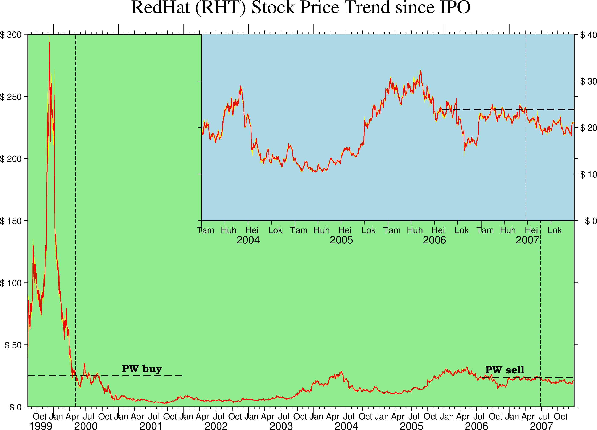

Date,Open,High,Low,Close,Volume,Adj.Close*
12-Mar-04,17.74,18.49,17.67,18.02,4827500,18.02
11-Mar-04,17.60,18.90,17.37,18.09,7700400,18.09UndefVarError: `Date` not defined Stacktrace: [1] top-level scope @ In[2]:1
As discussed in the Technical Reference Section Cartesian time axes, the annotation of time-series is generally more complicated due to the extra degrees of freedom afforded by the dual annotation system. In this example we will display the trend of the stock price of RedHat (RHAT) from their initial public offering until late 2006. The data file is a comma-separated table and the records look like this:
UndefVarError: `Date` not defined Stacktrace: [1] top-level scope @ In[2]:1
Hence, we have a single header record and various prices in USD for each day of business. We will plot the trend of the opening price as a red line superimposed on a yellow envelope representing the low-to-high fluctuation during each day. We also indicate when and at what cost Paul Wessel bought a few shares, and zoom in on the developments since 2004; in the inset we label the time-axis in Finnish in honor of Linus Thorvalds. Because the time coordinates are Y2K-challenged and the order is backwards (big units of years come after smaller units like days) we must change the default input/output formats used by GMT. Finally, we want to prefix prices with the $ symbol to indicate the currency. Here is how it all comes out:
using GMT
GMT.resetGMT() # hide
gmtbegin()
gmtset(FORMAT_DATE_IN="dd-o-yy", FORMAT_DATE_MAP=:o, FONT_ANNOT_PRIMARY="+10p",
FORMAT_TIME_PRIMARY_MAP=:abbreviated, PS_CHAR_ENCODING="ISOLatin1+")
# Unfortunately, for time data some things must be numeric (seconds) other time strings
wesn = gmtinfo("@RHAT_price.csv", f=:T, inc=50, per_column=true)
# This provides the min/max time as a time string (1999-08-11T00:00:00/2007-12-31T00:00:00/0.0/300.0)
R = gmtinfo("@RHAT_price.csv", f=:T, inc=50) # The output is a cell
R = R.text[1][3:end]
wT, eT, sF, = split(R, '/')
# Lay down the basemap:
basemap(region=R, frame=(axes=:WSen, title="RedHat (RHT) Stock Price Trend since IPO", fill=:lightgreen),
xaxis=(annot=3, annot_unit=:month, ticks=1, ticks_unit="month2"),
yaxis=(annot=50, prefix="\$ ",), xaxis2=(annot=1, annot_unit=:year), figsize=(22,15), portrait=false)
# Plot main window with open price as red line over yellow envelope of low/highs
RHAT1_env = gmtconvert("@RHAT_price.csv", outcols="0,2", colinfo="0T")
RHAT2_env = gmtconvert("@RHAT_price.csv", outcols="0,3", colinfo="0T", reverse=true, suppress=true)
RHAT_env = [RHAT1_env.data; RHAT2_env.data]
plot!(RHAT_env, fill=:yellow)
plot!("@RHAT_price.csv", lw=:thin, lc=:red)
# Draw P Wessel's purchase price as line and label it. Note we temporary switch
# back to default yyyy-mm-dd format since that is what gmt info gave us.
fid = open("RHAT.pw","w")
println(fid, "05-May-00 0")
println(fid, "05-May-00 300")
close(fid)
plot!("RHAT.pw", lw=:thinner, ls=:dash, f=:T)
fid = open("RHAT.pw","w")
println(fid, "01-Jan-99 25")
println(fid, "01-Jan-02 25")
close(fid)
plot!("RHAT.pw", lw=:thick, ls=:dash, f=:T)
text!(mat2ds([wesn.data[1] 25], "PW buy"), offset=(3.8, 0.15), font=(12, "Bookman-Demi"), justify=:LB)
# Draw P Wessel's sales price as line and label it.
fid = open("RHAT.pw","w")
println(fid, "25-Jun-07 0")
println(fid, "25-Jun-07 300")
close(fid)
plot!("RHAT.pw", lw=:thinner, ls=:dash, f=:T)
fid = open("RHAT.pw","w")
println(fid, "01-Aug-06 23.8852");
println(fid, "01-Jan-08 23.8852");
close(fid);
plot!("RHAT.pw", lw=:thick, ls=:dash, f=:T)
text!(mat2ds([wesn.data[2] 23.8852], "PW sell"), offset=(-2, 0.15), font=(12, "Bookman-Demi"), justify=:RB)
# Get smaller region for insert for trend since 2004
R = "2004T/" * eT * '/' * sF * "/40"
# Lay down the basemap, using Finnish annotations and place the insert in the upper right
basemap!(region=R, frame=(axes=:ESw, fill=:lightblue),
xaxis=(annot=3, annot_unit=:month, ticks=3, ticks_unit="month2"),
yaxis=(annot=10, prefix="\$ ",), xaxis2=(annot=1, annot_unit=:year),
proj=:linear, figsize=(15, 7.5), xshift=7, yshift=7.5, par=(:GMT_LANGUAGE, :fi))
# Again, plot close price as red line over yellow envelope of low/highs
plot!(RHAT_env, fill=:yellow)
plot!("@RHAT_price.csv", lw=:thin, lc=:red)
# Draw P Wessel's sales price as dashed line
plot!("RHAT.pw", lw=:thick, ls=:dash, f=:T)
# Mark sales date
fid = open("RHAT.pw","w")
println(fid, "25-Jun-07 0")
println(fid, "25-Jun-07 300")
close(fid)
plot!("RHAT.pw", lw=:thinner, ls=:dash, f=:T)
rm("RHAT.pw")
gmtend(:show)gmt2kml [WARNING]: Column selected for latitude-formatting has values that exceed +/- 90; set to NaN